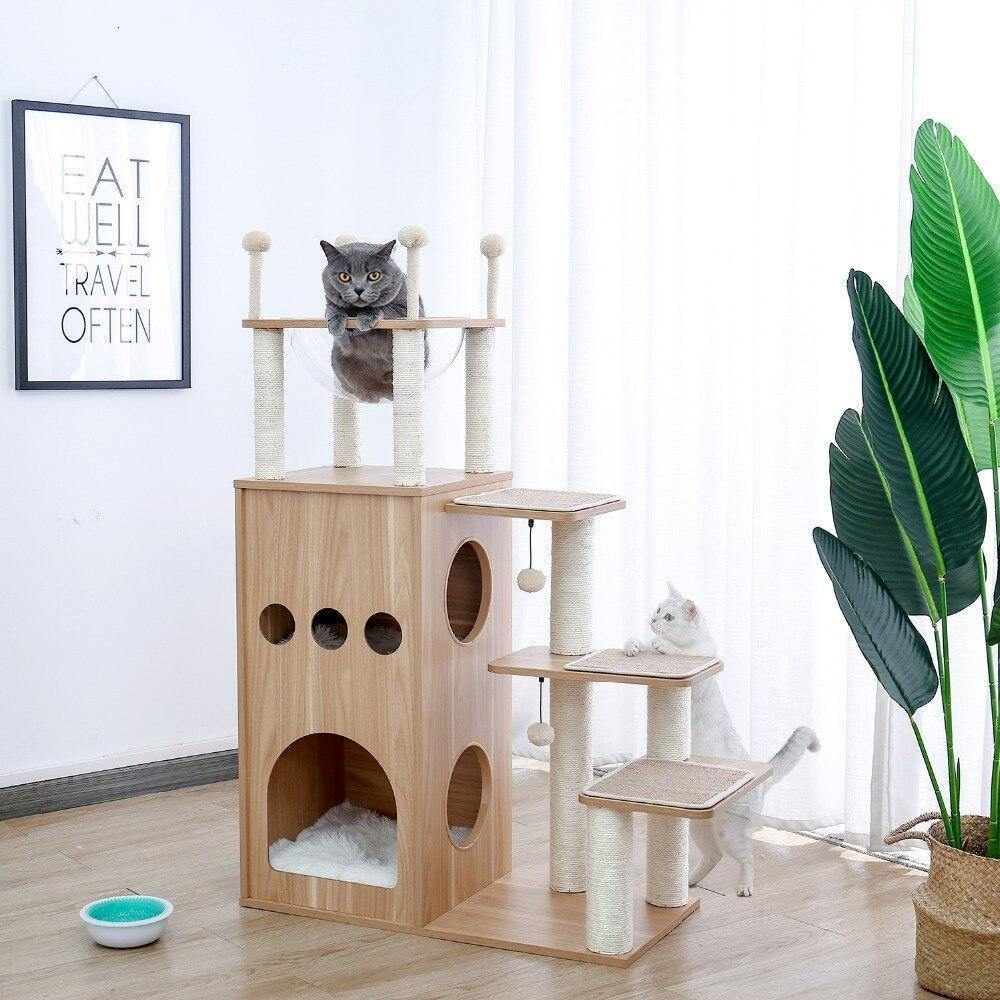

I bought a house! Again!
Hello blog fam, long time no see! Definitely been neglecting you a bit recently but had some serious amazing happening in my life! Let me cat-ch you up!
Early this year I decided that my old-school fuzzy igloo just wasn't cutting it. It was great when I first moved in but I didn't intend on using it except for sleeping. But it turns out I'm a serious home-body. Especially this year with my human at home all the time requiring my supervision, lol.
"Home is where our story begins..."
So I started looking at new home options! I quickly realized how many choices were out there so I had to get real and work out my essential criteria - 1) I wasn't kidding about the human requiring supervision, so a home with multiple vantage points for maximum judgement was top of the list; 2) comfort also matters to me - so it had to have built in soft furnishings; 3) it's tough being a public persona so I need a good cave for down time and privacy - safely away from prying eyes and 4) every feline goddess needs to work out her issues from time to time, so some structural scratching posts elements providing maximum rage venting convenience was my top desirable feature!
I'm thrilled to say I found the perfect place; a four level furnished apartment that perfectly fits my hygge aesthetic. It was a bit of an assembly job but I outsourced that to the human. And now I'm all moved in and ready to judge from on high. Wish me luck fam!